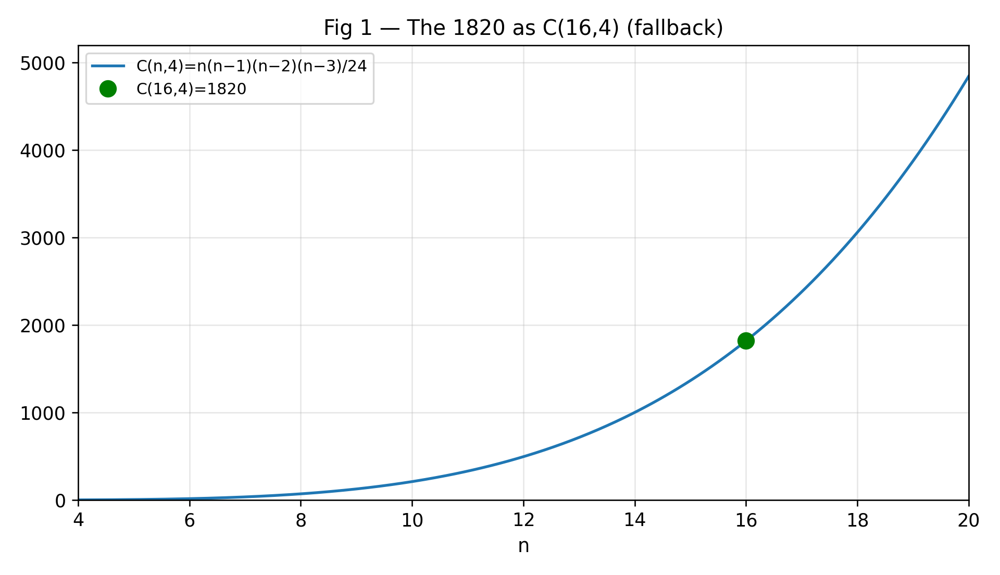
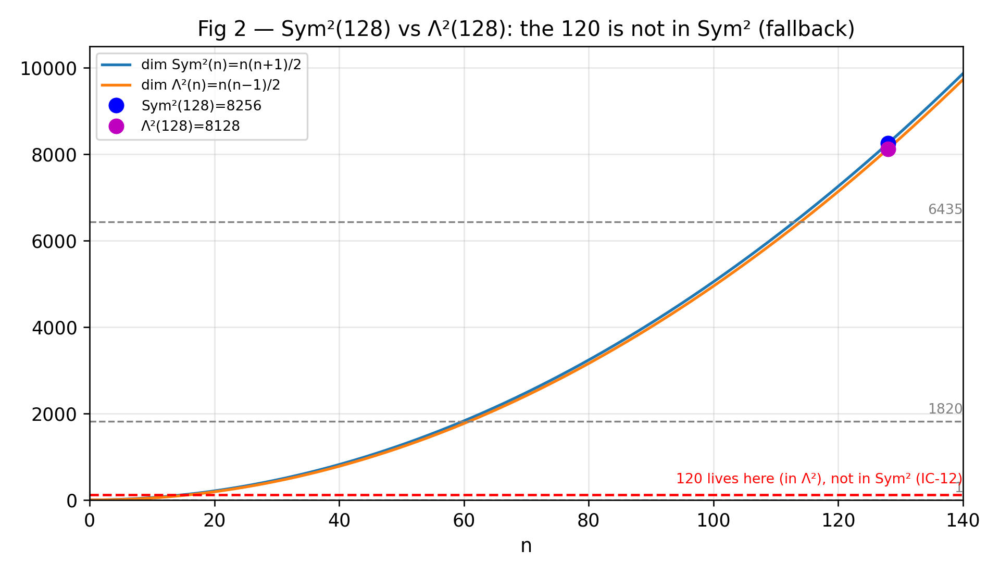
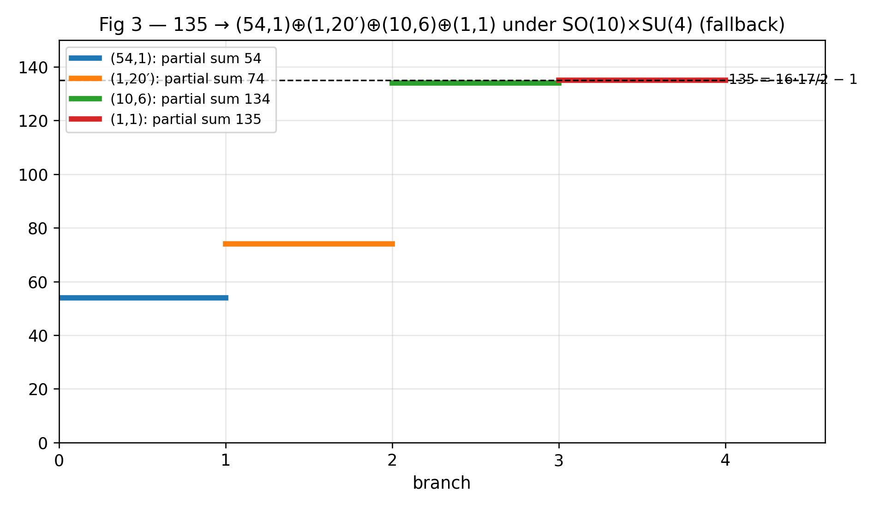
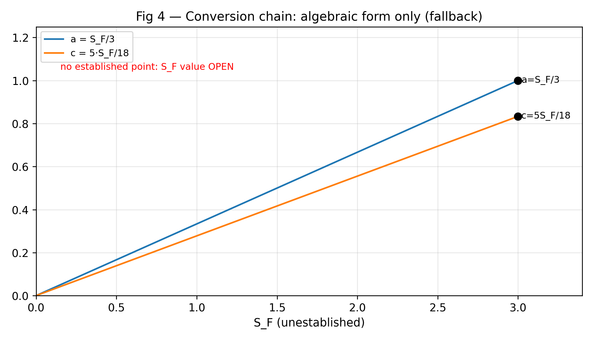
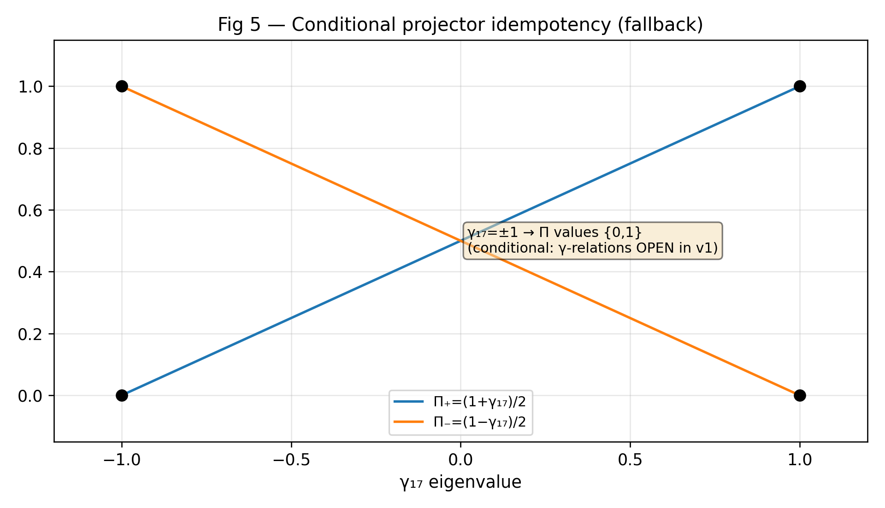
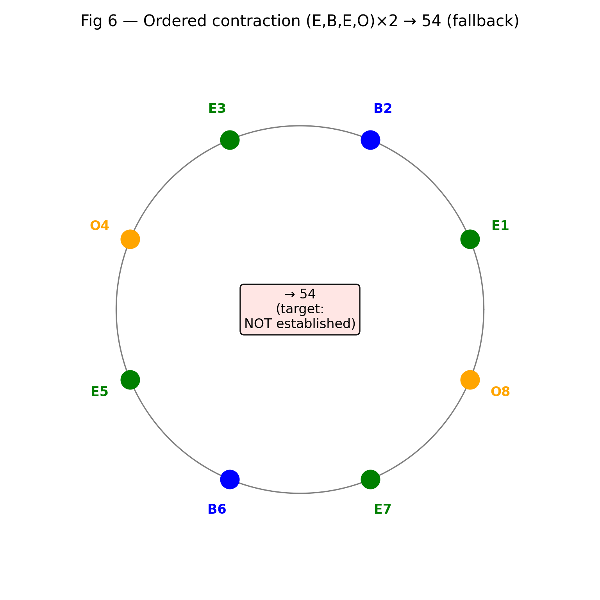

A restructured rewrite of Book 18 of R Theory — Volume IV (v1, the audit authority). Pictures and intuition first; the formal audit second. Every claim carries exactly one status: CP checked proof, SC completed symbolic check, NC completed numerical check, ST standard imported theorem, MA manuscript assertion, AX assumption or axiom, IN incomplete or failed computation, IC incorrect result. A sampled numerical agreement (~1e-10) is a completed numerical check, never a proof.
Reading this page. The manuscript's own words EXACT / CONDITIONAL / OPEN are its self-labels, never the audit's verdicts. Figures are live Desmos calculators; if Desmos cannot load, a static rendering appears instead. Live Desmos rendering was not browser-verified from the build machine — the static fallbacks carry the verified numbers, generated from the same expressions as the embeds (see validation/book18/). v1 is the sole audit authority.
Contents. I. See it first · II. Then earn it · III. Incorrect and open · IV. Close the book
Rewrite status: all pictured identities re-verified — 42 real assertions in validation/book18/verify_book18.py (41 CP, 1 NC), all passing, no timeouts; worst measured deviation 1.8e-2 on the V_E⁴ bound check (|5.0273⁴ − 638.78| = 0.018 against the 0.05 bound; all exact-integer checks at 0). Embed consistency checked by validation/book18/test_embeds.py (6 figures, 42 latex fragments, viewport containment). Chunk 4 audit: 40 assertions, 0 failed — CP 31 · NC 1 · IC 8 assertions (IC-12…IC-17, two with sub-assertions), no timeouts. Source: Volume IV v1, doc 1-T5Eh7tbPcNenfB1ubkUmST5IYq_QGchm5X1ZcIRvoU. Live Desmos rendering was not browser-verified from the build machine — the static fallbacks carry the verified numbers.
Six figures: the algebra the book establishes, drawn before the defects are listed. Every number below is exact integer or rational arithmetic.

Proved 2026-09-20 — the 1820's invariant pairing is symmetric. The Frobenius–Schur indicator of the 1820 is +1: on W = Λ⁴(ℂ¹⁶) the determinant-of-Gram-matrix pairing B(v₁∧v₂∧v₃∧v₄, w₁∧w₂∧w₃∧w₄) = det(⟨vₖ,w_ℓ⟩) is well-defined, SO(16)-invariant, nondegenerate, and symmetric — and by Schur's lemma on Hom_G(W,W*) it is the unique invariant bilinear form up to scale. So every SO(16)-invariant pairing on the 1820 is symmetric; no alternating one exists. CP Scope. This constrains pairings, not operators: whether the manuscript's M_e/Oprop are SO(16)-equivariant at all is still a manuscript-reading question. MA





C(16,4) = 1820, 128·129/2 = 8256 = dim Sym²(128), 1 + 1820 + 6435 = 8256, 2⁷ = 128. CP Branching arithmetic: 54 + 20 + 10·6 + 1 = 135; Sym²₀(10): 55 − 1 = 54; §18.5's 135|_{SO(10)×SU(4)} = (54,1)⊕(1,20')⊕(10,6)⊕(1,1) is dimensionally exact CP, with the SO(10)/SU(4) content standard representation theory ST.
S_F = 3a_{2222} from (6/5)(5/2) = 3; a = (6/5)c inverts to c_{ord} = 5S_F/18; −(1/256)(√10/6) = −√10/1536 exactly. CP γ_{17}² = +1 under the Clifford relations (sign (−1)^{120} = +1), so Π_± = (1±γ_{17})/2 is idempotent — CP as a conditional inference; the γᵢ relations themselves are OPEN in v1. The missing-input lines ("explicit 1820×1820 E, B, O matrices") are present and honest. CP
(√2)⁴ = 4 (established propagator cosh product), (√2)⁸ = 16 (all-eight product) CP — the value 16 at line 3542 matches the all-eight product, not the propagator product. V_E⁴ ≈ 638.78: 5.0273⁴ = 638.76, within 0.05. NC
§18.8 repeats the §17.18.8.2 Wolfram skeleton with the Step-5 sum ranges further abbreviated away — and with the same four defects (IC-13…IC-16). Two more errors recur as IC-12 (the 120 in Sym²(128), = IC-6) and IC-17 (new: the §18.2 gamma template). IC
Explicit 1820×1820 E, B, O matrices; the explicit 1820 projector; the 120 embedding; the 54 projector (135 vs 1820 unreconciled); the S_F numerical value; N_{1820}. MA
§17.18 and Book 18 share the same title (duplication flag — the two sections cover overlapping contraction material with the skeleton defects recurring). The dangling "§17.11" reference and the Flatwave naming question are carried on the Volume IV overview page.
Established. The dimension/combinatorics spine (1820 = C(16,4), 8256 = 1+1820+6435, 2⁷ = 128), the branching arithmetic (54+20+60+1 = 135), the conversion chain's algebraic closure, and the conditional projector idempotency. Not established: the explicit matrices, the 1820 projector, the 54's location, or the S_F value — and the skeleton that would compute it is defective in both of its printings. Book 18 is a roadmap with the algebra checked and the construction open. The UV boundary — what, if anything, this contracts to — is Book 19.